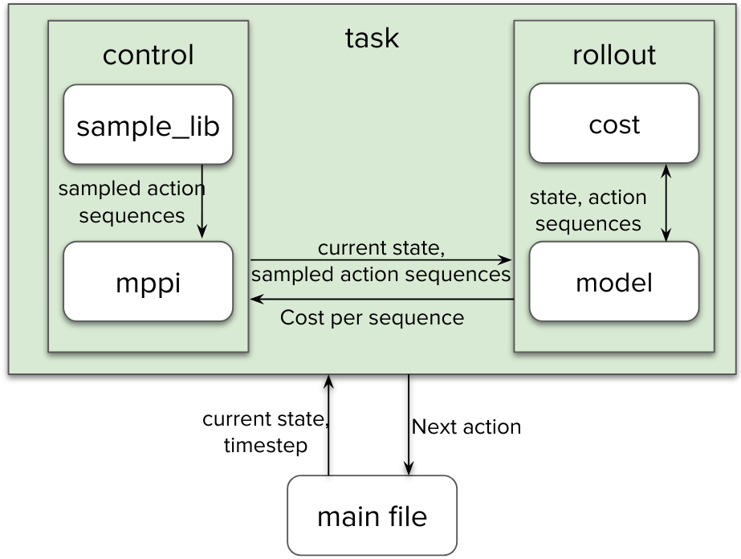

storm_kit.mpc package
Different components of our model predictive control framework is described below.
Subpackages
- storm_kit.mpc.control package
- Submodules
- storm_kit.mpc.control.control_base module
- storm_kit.mpc.control.control_utils module
batch_cholesky()cost_to_go()cost_to_go_np()gaussian_entropy()gaussian_kl()gaussian_logprob()gaussian_logprobgrad()generate_gaussian_halton_samples()generate_gaussian_sobol_samples()generate_halton_samples()generate_noise()generate_noise_np()generate_prime_numbers()generate_van_der_corput_sample()generate_van_der_corput_samples_batch()get_stomp_cov()matrix_cholesky()scale_ctrl()
- storm_kit.mpc.control.mppi module
- storm_kit.mpc.control.olgaussian_mpc module
- storm_kit.mpc.control.sample_libs module
- Submodules
- storm_kit.mpc.cost package
DistCostFiniteDifferenceCostJacobianCostPoseCostProjectedDistCostZeroCostget_inv_null_cost()get_transpose_null_cost()- Submodules
- storm_kit.mpc.cost.bound_cost module
- storm_kit.mpc.cost.capsule_collision_cost module
- storm_kit.mpc.cost.circle_collision_cost module
- storm_kit.mpc.cost.collision_cost module
- storm_kit.mpc.cost.cost_base module
- storm_kit.mpc.cost.dist_cost module
- storm_kit.mpc.cost.ee_vel_cost module
- storm_kit.mpc.cost.finite_difference_cost module
- storm_kit.mpc.cost.gaussian_projection module
- storm_kit.mpc.cost.image_collision_cost module
- storm_kit.mpc.cost.jacobian_cost module
- storm_kit.mpc.cost.manipulability_cost module
- storm_kit.mpc.cost.null_costs module
- storm_kit.mpc.cost.pose_cost module
- storm_kit.mpc.cost.primitive_collision_cost module
- storm_kit.mpc.cost.projected_dist_cost module
- storm_kit.mpc.cost.robot_self_collision_cost module
- storm_kit.mpc.cost.stop_cost module
- storm_kit.mpc.cost.voxel_collision_cost module
- storm_kit.mpc.cost.zero_cost module
- storm_kit.mpc.model package
- storm_kit.mpc.rollout package
- storm_kit.mpc.task package
- storm_kit.mpc.utils package